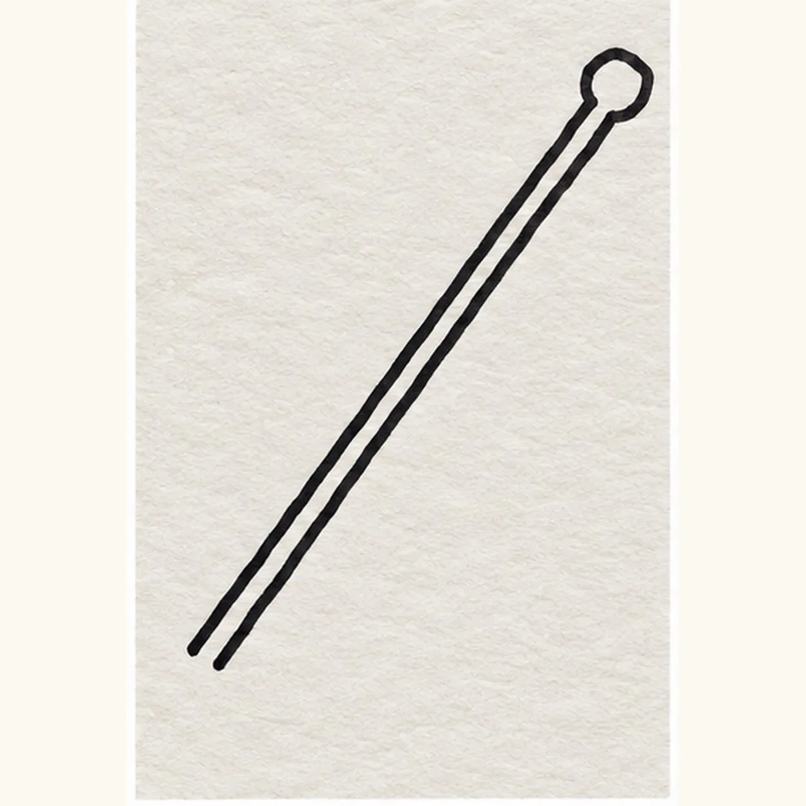
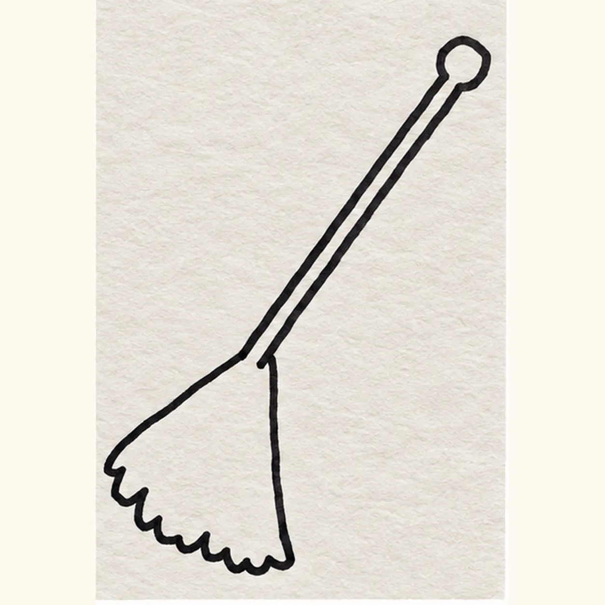
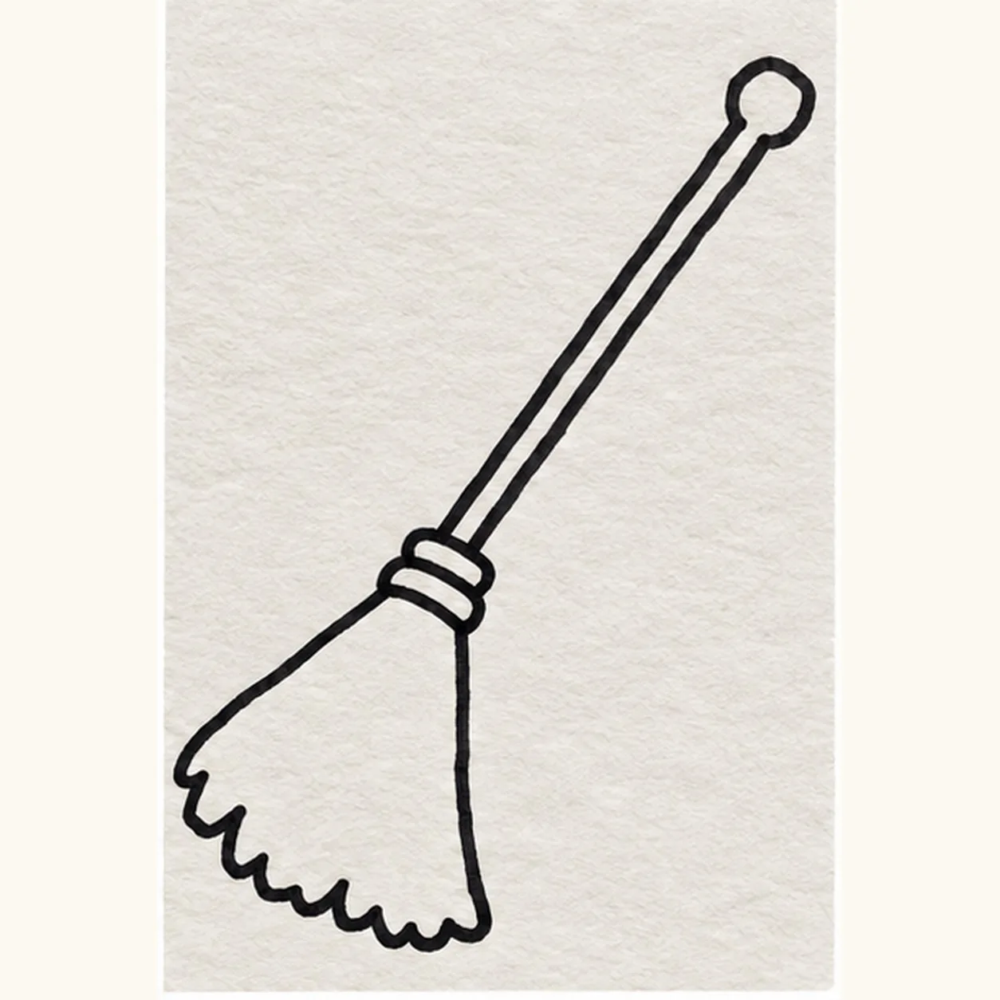
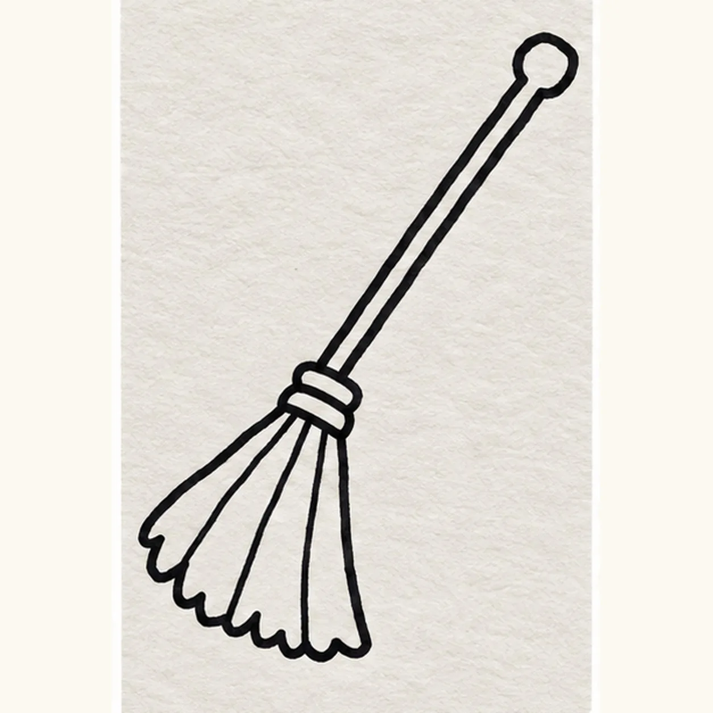
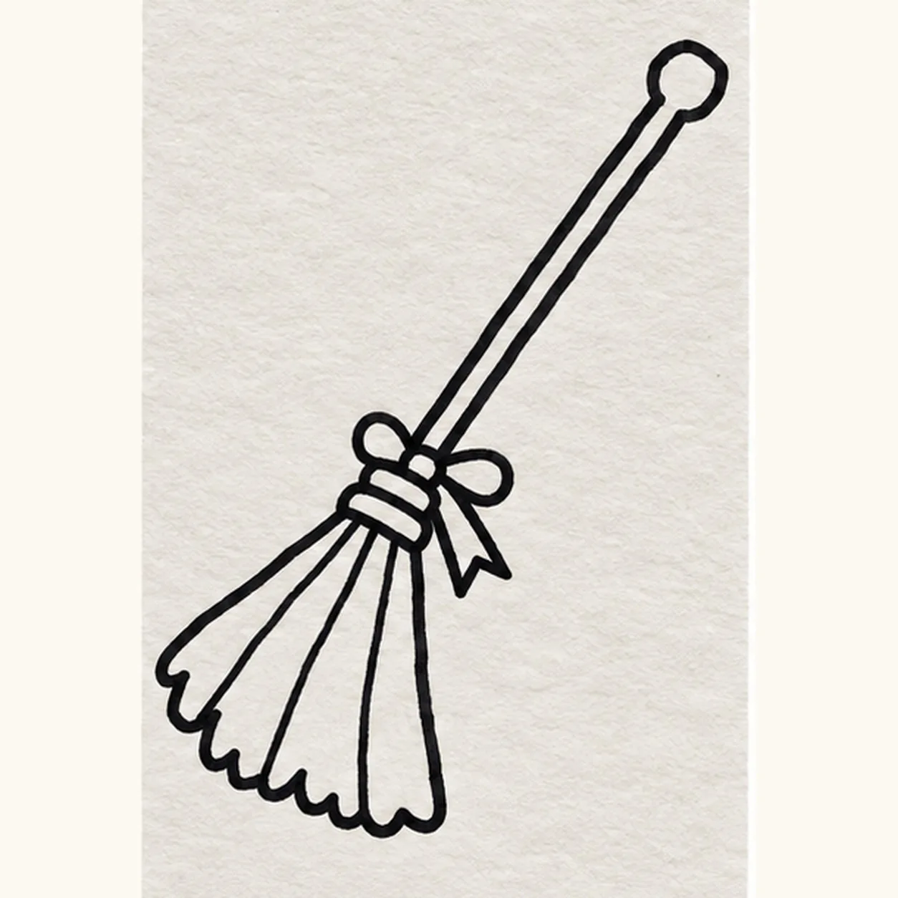

Felt-tip marker mode
Let's draw a witch's broom
Treat this as one playful practice round: sketch the idea loosely, simplify the shapes, then commit with confident marker outlines and bright fills.
-
01

Draw the long handle and round knob
Draw two parallel diagonal handle lines from lower left to upper right, with a small round knob at the upper tip. Leave the lower-left ends OPEN for the straw fan to attach; do not cap or connect them.
Marker tip: Keep the lower two ends unconnected so the straw can attach without erasing ink.
-
02

Draw the wide bristle fan
At the lower-left handle end, open a broad straw fan with two angled sides and a scalloped lower edge.
Marker tip: Aim both fan sides toward the open handle ends and let the bottom edge wobble like loose straw.
-
03

Draw the wrapped collar
Wrap two curved bands around the join where the handle enters the straw fan.
Marker tip: Lay the bands across the joint; they hide the short shaft ends on purpose.
-
04

Draw the straw divisions
Inside the established fan, pull three loose straw division lines from the collar toward three existing scallop points.
Marker tip: Count three interior straw lines, leaving four broad sections of open paper.
-
05

Draw the ribbon bow
At the upper edge of the collar, tie a small two-loop bow with one short notched tail, keeping the handle clear.
Marker tip: Draw both bow loops before adding the single hanging notched tail.
-
06

Color the broom
Fill the established handle warm brown, the straw fan ochre, the collar violet, and the bow plum. Keep the black contours and a few paper gaps visible.
Marker tip: Color around both bow loops so neither one disappears under the collar fill.